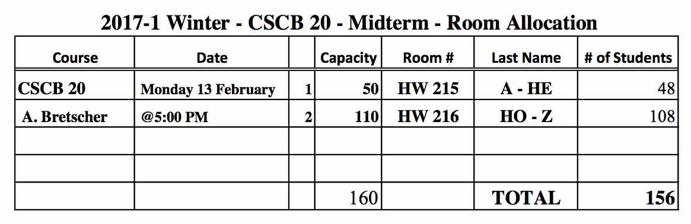

Midterm
There will be one midterm. The midterm will be 75min in length. You should go to either HW215 or HW216 depending on your last name as
shown here.

Preparing for the midterm:
- Understand all parts of A1.
- The midterm will cover everything on databases that we did from the start until part way through the week 6 lecture.
Once you have done some preparation, you can practice on a previous midterm: Term Test